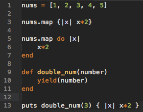
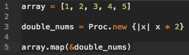
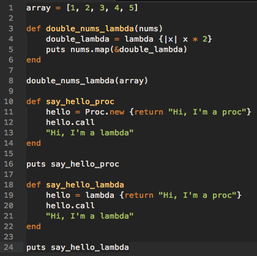

Blocks, Procs, and Lambdas - Less Confusing Than They Sound
Blocks are, wait for it, blocks of code surrounded by curly braces or encapsulated in the do..end keywords. Let’s take a closer look at this. Many methods in Ruby iterate through an array or hash. As you iterate, you can do a block of code on each value. You can also use a block written outside of a method inside of the method by using the yield keyword. Let’s look at some examples to better understand what these words mean.

Line 1 creates an array with 5 numbers. Line 3 uses a block to multiply each value in the array by 2. Lines 5 - 7 do the same thing but with the different do..end syntax. Lines 9 to 13 show the use use of the yield keyword. The double_num method is ran, and at the yield keyword, the block of code after the call to the method on line 13 is run multiplying the number 3 by 2 and returning 6.
Procs
I found that the best way to describe a proc, given our look into blocks, is a saved block. Blocks are not objects in Ruby. As such, they cannot be stored in a variable and used again. You would have to write a block each time you wanted to use it. Procs solve this problem. Let’s take a look at some code.

As before, we are taking the array with 5 values on line 1. Line 3 is creating a proc called double_nums that doubles a given value. Here, we are using the Proc.new syntax to create the reusable proc. Line 5 is an example that uses the proc through the & symbol which calls the proc.
Lambdas
Lambdas take a step from the old proc playbook. They are pretty similar with some syntax differences. They are also an object, and they offer the ability to be used repeatedly. The main difference relates to how the proc or lambda interacts within a method. When a lambda returns, it passes control back to the calling method. A proc does not. It ends once it is called without returning to the method. That might be confusing. Some code will help illustrate the syntax differences and the difference between procs and lambdas.

Lines 3 - 6 go with the theme we have been running with so far. The double_nums_lambda method on line 3 creates a lambda using the keyword lambda and the block of code. On line 5, it is passed in to the array, effectively doubling each number in array. Lines 10 - 24 illustrate one of the key ways procs and lambdas are different. The method say_hello_proc returns “Hi, I’m a proc” because it ends after the proc is called. The method say_hello_lambda returns “Hi, I’m a lambda" because it returns to that final statement after the lambda with the proc greeting is called.